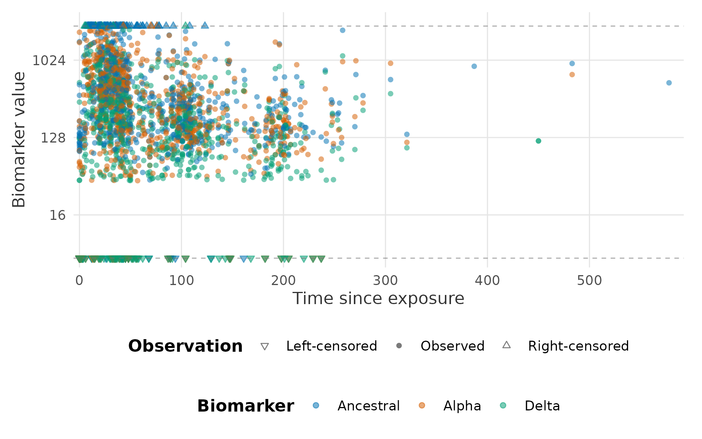

epikinetics fits a Bayesian hierarchical kinetics model
to repeated biomarker measurements after one focal exposure. This
vignette shows the intended path from a data frame to diagnostics and
posterior trajectories. The fitting chunks are not evaluated while
building the vignette because they require a local CmdStan
installation.
Set up CmdStan
CmdStanR and CmdStan are external to the package. Install CmdStan explicitly once:
cmdstanr::check_cmdstan_toolchain(fix = TRUE)
cmdstanr::install_cmdstan()
cmdstanr::cmdstan_version()The first model fit compiles a threaded executable and caches it. Package installation and loading do not compile a model or install CmdStan.
Read, prepare, and inspect data
The package includes public example data from the motivating SARS-CoV-2 study. They are ordinary CSV files rather than special R objects.
library(epikinetics)
dat <- read.csv(
system.file("extdata", "delta.csv", package = "epikinetics")
)
dat[1:4, c("pid", "day", "last_exp_day", "titre_type", "value",
"infection_history")]
#> pid day last_exp_day titre_type value infection_history
#> 1 1 2021-03-10 2021-03-08 Ancestral 175.9350 Infection naive
#> 2 1 2021-04-15 2021-03-08 Ancestral 607.5750 Infection naive
#> 3 1 2021-07-08 2021-03-08 Ancestral 179.0463 Infection naive
#> 4 1 2021-03-10 2021-03-08 Alpha 5.0000 Infection naiveValidation and transformation can be run separately. This is fast, does not need CmdStan, and makes scale, censoring, indices, and the model matrix inspectable before sampling.
prepared <- prepare_epikinetics_data(
dat,
formula = ~ infection_history,
covariate_parameters = "all",
biomarker_order = c("Ancestral", "Alpha", "Delta"),
lower_limit = 5,
upper_limit = 2560
)
prepared
#> Prepared epikinetics model data
#> Observations: 2255
#> Participants: 335
#> Biomarkers: 3 (Ancestral, Alpha, Delta; explicit order)
#> Covariates: infection_history
#> Effects on: baseline, time_to_peak, waning_duration, boost_rate, early_waning_rate, late_waning_rate
#> Random effects: baseline, boost_rate, early_waning_rate, late_waning_rate
#> Censoring: none=2003, left=126, right=126
#> Time range: 0 to 578 since exposure
#> Model scale: log2(value / 1); range 2.321928 to 11.321928
#> Exposure: one fixed focal exposure per participant
summary(prepared)
#> Prepared epikinetics model-data summary
#> observations participants biomarkers covariates
#> 2255 335 3 1
#>
#> Ranges
#> quantity minimum maximum
#> time_since_exposure 0.000000 578.00000
#> response 5.000000 2560.00000
#> model_response 2.321928 11.32193
#>
#> Censoring
#> censoring observations
#> none 2003
#> left 126
#> right 126
#>
#> Participant observation counts
#> Min. 1st Qu. Median Mean 3rd Qu. Max.
#> 3.000 5.000 6.000 6.731 9.000 14.000
#>
#> Formula: ~infection_history
#> Transformation: log2(value / 1)
#> Model-matrix columns: infection_historyPreviously infected (Pre-Omicron)
#> Formula affects: baseline, time_to_peak, waning_duration, boost_rate, early_waning_rate, late_waning_rate
#> Participant random effects: baseline, boost_rate, early_waning_rate, late_waning_rate
#> Biomarker order (explicit): Ancestral, Alpha, Delta
#> Factor reference levels: infection_history=Infection naive
#>
#> Design-column mapping
#> design_column term
#> infection_historyPreviously infected (Pre-Omicron) infection_history
#> variables level reference_level
#> infection_history Previously infected (Pre-Omicron) Infection naive
#> label
#> infection_history=Previously infected (Pre-Omicron) (vs Infection naive)
plot(prepared)
Prepared observations on the response scale. Biomarkers retain the order supplied during data preparation, and point shapes distinguish censoring status.
# These are the transformed observations, participant mapping, formula
# encoding, and exact list that will be supplied to Stan.
prepared$observations[1:6, ]
#> source_row participant participant_index observation_time exposure_time
#> 1 1 1 1 2021-03-10 2021-03-08
#> 2 4 1 1 2021-03-10 2021-03-08
#> 3 7 1 1 2021-03-10 2021-03-08
#> 4 2 1 1 2021-04-15 2021-03-08
#> 5 5 1 1 2021-04-15 2021-03-08
#> 6 8 1 1 2021-04-15 2021-03-08
#> time_since_exposure biomarker biomarker_index value value_model
#> 1 2 Ancestral 1 175.9350 7.458899
#> 2 2 Alpha 2 5.0000 2.321928
#> 3 2 Delta 3 5.0000 2.321928
#> 4 38 Ancestral 1 607.5750 9.246919
#> 5 38 Alpha 2 416.7905 8.703178
#> 6 38 Delta 3 288.1785 8.170819
#> lower_limit lower_limit_model upper_limit upper_limit_model censoring
#> 1 5 2.321928 2560 11.32193 none
#> 2 5 2.321928 2560 11.32193 left
#> 3 5 2.321928 2560 11.32193 left
#> 4 5 2.321928 2560 11.32193 none
#> 5 5 2.321928 2560 11.32193 none
#> 6 5 2.321928 2560 11.32193 none
#> censoring_code infection_history
#> 1 0 Infection naive
#> 2 -1 Infection naive
#> 3 -1 Infection naive
#> 4 0 Infection naive
#> 5 0 Infection naive
#> 6 0 Infection naive
prepared$participants[1:6, ]
#> participant_index participant exposure_time observation_count
#> 1 1 1 2021-03-08 9
#> 2 2 2 2021-01-11 12
#> 3 3 3 2021-03-23 6
#> 4 4 4 2021-02-24 9
#> 5 5 5 2021-01-11 12
#> 6 6 6 2021-03-11 3
#> infection_history
#> 1 Infection naive
#> 2 Infection naive
#> 3 Infection naive
#> 4 Previously infected (Pre-Omicron)
#> 5 Infection naive
#> 6 Previously infected (Pre-Omicron)
prepared$mappings$biomarker
#> biomarker_index biomarker observation_count
#> 1 1 Ancestral 734
#> 2 2 Alpha 754
#> 3 3 Delta 767
prepared$mappings$reference_levels
#> infection_history
#> "Infection naive"
prepared$mappings$design_columns
#> design_column term
#> 1 infection_historyPreviously infected (Pre-Omicron) infection_history
#> variables level reference_level
#> 1 infection_history Previously infected (Pre-Omicron) Infection naive
#> label
#> 1 infection_history=Previously infected (Pre-Omicron) (vs Infection naive)
model.matrix(prepared)[1:6, , drop = FALSE]
#> infection_historyPreviously infected (Pre-Omicron)
#> 1 0
#> 2 0
#> 3 0
#> 4 1
#> 5 0
#> 6 1
str(stan_data(prepared), max.level = 1)
#> List of 22
#> $ N_observations : int 2255
#> $ N_participants : int 335
#> $ N_biomarkers : int 3
#> $ N_covariates : int 1
#> $ biomarker : int [1:2255] 1 2 3 1 2 3 1 2 3 1 ...
#> $ time : num [1:2255] 2 2 2 38 38 38 122 122 122 43 ...
#> $ value : num [1:2255] 7.46 2.32 2.32 9.25 8.7 ...
#> $ censoring : int [1:2255] 0 -1 -1 0 0 0 0 0 0 0 ...
#> $ lower_limit : num [1:2255] 2.32 2.32 2.32 2.32 2.32 ...
#> $ upper_limit : num [1:2255] 11.3 11.3 11.3 11.3 11.3 ...
#> $ observation_start : int [1:335] 1 10 22 28 37 49 52 55 61 69 ...
#> $ observation_end : int [1:335] 9 21 27 36 48 51 54 60 68 71 ...
#> $ participant_sequence : int [1:335] 1 2 3 4 5 6 7 8 9 10 ...
#> $ X : num [1:335, 1] 0 0 0 1 0 1 0 1 0 1 ...
#> $ covariate_active : int [1:6] 1 1 1 1 1 1
#> $ participant_effect_active : int [1:6] 1 0 0 1 1 1
#> $ grainsize : int 1
#> $ population_prior_mean : num [1:6] 6 10 50 0.25 0.02 0.002
#> $ population_prior_sd : num [1:6] 2e+00 5e+00 2e+01 1e-01 1e-02 5e-03
#> $ participant_sd_prior_scale: num [1:6] 0.75 0.35 0.5 0.35 0.5 0.75
#> $ covariate_prior_scale : num [1:6] 0.5 0.35 0.5 0.35 0.5 0.75
#> $ observation_sd_prior_scale: num 1The formula uses normal R treatment contrasts. Its intercept is
required in the formula and removed internally because
biomarker-specific population parameters already act as intercepts.
Here, infection_history must be constant within each
participant.
This separation is deliberate. Longitudinal ordering, response-scale
transformation, censoring, participant indices, and factor contrasts can
all change the statistical input. They should be inspectable before
running a computationally expensive Bayesian model.
fit_epikinetics() therefore requires a prepared object
rather than silently preparing a raw data frame.
Fit
fit <- fit_epikinetics(
prepared,
chains = 4,
parallel_chains = 4,
threads_per_chain = 2,
iter_warmup = 1000,
iter_sampling = 1000,
seed = 2026
)
fit
summary(fit)Parallel chains run independent chains simultaneously. Threads within
a chain evaluate participant groups through Stan’s
reduce_sum. The default grainsize is based on the number of
participants and threads, and can be overridden with
grainsize after benchmarking a representative dataset.
Diagnose
Always inspect diagnostics before interpreting the posterior.
diagnostics <- diagnose_epikinetics(fit)
diagnostics$overview
# Optionally run CmdStan's full text diagnostic utility too.
diagnose_epikinetics(fit, run_cmdstan = TRUE)The compact report covers divergences, maximum-treedepth hits, E-BFMI, R-hat, and effective sample sizes. The underlying CmdStanR fit remains available for all standard diagnostics:
stan_fit <- cmdstan_fit(fit)
stan_fit$diagnostic_summary()
stan_fit$summary()Extract parameters
posterior_parameters(fit, level = "population")
posterior_parameters(fit, level = "regression")
posterior_parameters(fit, level = "profile")
posterior_parameters(
fit,
level = "participant",
participants = c("1", "2")
)Population and participant output includes the six fitted kinetic
parameters and, by default, interpretable derived quantities: transition
time, peak and transition values, and early/late waning half-lives. For
a log2-linear waning rate (r), half-life is (1/r) in the time unit of
the input. Set summary = FALSE to retain one row per
posterior draw.
level = "profile" applies fitted regression effects to
the same automatic conditional grid used by predict(),
retaining biomarker and original covariate labels.
level = "population" instead reports the underlying
biomarker-specific intercept parameters before covariate effects.
Raw Stan draws can be obtained without translating parameter names:
draws <- posterior_draws(fit)Predict and plot trajectories
The three prediction types answer distinct questions:
-
"population"applies covariates but excludes participant variation; -
"individual"reconstructs fitted participants using their posterior effects; and -
"new"draws effects for new participants with supplied covariates.
By default, participant effects are fitted for baseline, boost rate,
early waning rate, and late waning rate. Peak timing and the duration
from peak to the early/late waning switch have no residual participant
random effect after conditioning on selected covariates. This is an
explicit modelling assumption that is appropriate and stable for the
motivating data, not a universal immunological claim. Select another
scientifically supported subset with participant_parameters
during preparation; new-participant predictions draw only the selected
effects.
# The formula is carried forward automatically. This grid contains the
# infection-history categories observed in the fitted participant data.
prediction_grid(fit)
population <- predict(
fit,
times = 0:150,
type = "population"
)
plot(population)
# Override the grid with any supported fitted levels.
profiles <- data.frame(
infection_history = c(
"Infection naive",
"Previously infected (Pre-Omicron)"
)
)
selected_population <- predict(fit, newdata = profiles, times = 0:150)
individual <- predict(
fit,
participants = c("1", "2"),
times = 0:150,
type = "individual",
ndraws = 500
)
plot_individual(individual, participant = "1")
# Equivalent one-participant convenience method.
plot_individual(fit, participant = "1")
new_people <- predict(
fit,
newdata = profiles,
times = 0:150,
type = "new",
seed = 14
)
plot(new_people)
# Convenient formula-aware population plot with observed data overlaid.
plot(fit)
# Reuse one bounded-memory summary for a cohort PDF.
all_individuals <- predict(
fit,
type = "individual",
times = 0:150,
ndraws = 500
)
save_individual_plots(
all_individuals,
path = "individual-plots",
format = "pdf",
multipage = TRUE
)Default profiles use observed combinations of categorical variables
and hold continuous variables at their participant-level medians. They
are conditional trajectories for those profiles, not covariate-marginal
averages. prediction_grid() exposes the inputs before
prediction and can explicitly construct a Cartesian factor grid when
extrapolation to unobserved combinations is scientifically justified.
The original terms object, contrasts, levels, interactions, and
transformations are reused to build each numeric design row.
Prediction summaries retain both posterior mean and
median; plots use the median by default and accept
central = "mean". Population figures overlay biomarkers by
colour and facet over categorical profiles derived from the stored
formula. Censoring limits are dashed lines, and response-scale figures
use log2 spacing with natural-scale labels. The order supplied through
biomarker_order is retained in every output and legend;
without one, factor levels and then first appearance determine the
order.
Individual trajectories are evaluated in R from posterior
kinetic-parameter draws. Summary mode processes participants in chunks
rather than constructing one enormous
draw-by-participant-by-biomarker-by-time data frame, while
participants, biomarkers, times,
and ndraws provide explicit controls. This also allows
arbitrary time grids after fitting and avoids large generated-
quantities output. Use summary = FALSE only for
deliberately sized draw-level output.
The default interval describes uncertainty in the latent mean
trajectory. Use include_observation_noise = TRUE for an
explicitly labelled posterior predictive interval for a future
measurement. All plotting methods return ordinary ggplot
objects.
Continue with Priors before adapting the defaults, and use the data, diagnostics, and kinetics model and statistical structure vignettes for the full contracts behind this workflow. The applied case study uses the bundled Delta-wave data to reconstruct the population, peak/switch, calendar-time cohort, and exposure-timing analyses from the original package.